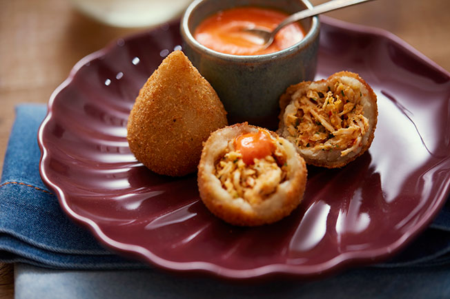

Coxinha

A drop-like fried savory that usually is stuffed with chicken (as in this recipe), can be found in bakerys and snack-bars.
Chicken Broth
Ingredients
- 1 chicken breast
- 2L water
- lemon peel strips (1 lemon)
- 1/2 onion
- 1 celery stem
- 2 bay leaves
- 4 cloves
- 1 teaspoon peppercorns
Steps
- Cut an onion in half, peel one of the halves and attach the bay leaf, skewering with the cloves — reserve
the other half of the onion for the stuffing. Cut the celery stalk into large pieces.
- In a large saucepan, place the chicken breast, studded onion, sliced celery, peppercorns and lemon peel
strips. Cover with water and place over high heat. Once it boils, lower the heat and cook for 20 minutes.
- With tongs, transfer the cooked chicken breast to the cutting board and wait for it to cool before handling.
Discard the skin and remove the two fillets from the bone. Cut each one in half, lengthwise — so the chicken
is already shredded into a smaller size, ideal for stuffing the drumsticks. Using two forks, shred the
chicken pieces while still warm.
- Reserve 2 ½ cups (tea) of the shredded breast to use in the stuffing — the rest of the cooked chicken can be
stored in the fridge or freezer for other recipes. Also reserve the cooking broth to use in the dough and
filling.
- 2 ½ cups of shredded chicken
- ½ onion
- 2 ripe tomatoes
- 3 cloves of garlic
- 1 red pepper
- ¾ cup of reserved chicken stock
- 2 tablespoons butter
- 2 tablespoons wheat flour
- 3 tablespoons chopped parsley
- ½ teaspoon coriander powder
- 1 teaspoon paprika
- salt and pepper to taste
Steps
- Peel and finely chop the onion and garlic cloves. Wash, dry and cut the tomatoes in half; discard the seeds
and cut each half into 0.5 cm cubes. Wash, dry and cut the girl's finger pepper in half; discard the seeds
and finely chop the halves. Tip: to avoid accidents with hot fingers in your eyes, apply oil or olive oil to
your hands after cutting the peppers — capsaicin, the substance responsible for burning, is fat-soluble —
and then wash your hands well.
- Place the butter in a medium saucepan over medium heat. When melted, add the onion, season with a pinch of
salt and sauté for 2 minutes until wilted. Add the minced garlic and pepper and stir for 1 minute to
perfume. Season with paprika and coriander powder, add the tomato and sauté for 3 minutes, until it starts
to break down and form a paste.
- Add the shredded chicken, season with salt and pepper to taste and mix well. Drizzle with the chicken stock
and cook, stirring occasionally, for about 10 minutes until dry.
- Sprinkle with the flour and mix well until it thickens slightly — this way the stuffing is moist but without
wetting the coxinha dough. Turn off the heat and stir in the chopped parsley.
- Transfer the stuffing to a bowl and wait for it to cool before assembling the drumsticks — if it's hot, it
can moisten the dough when you shape the drumsticks. Meanwhile, prepare the dough.
Dough
Ingredients
- 2 ½ cups of reserved chicken stock
- 2 ¼ cups all-purpose flour
- 50 g of butter
- 1 ½ teaspoon of salt
Ingredients
- In a medium saucepan over high heat, heat the chicken stock, butter and salt.
- Once the broth has boiled and the butter has melted, reduce the heat to medium. Gradually add the flour,
mixing well with a bamboo spatula until the broth incorporates all the flour and forms a dough. Keep the pan
over medium heat and continue stirring for about 2 minutes until the dough is smooth and a dry film forms on
the bottom of the pan.
- Transfer to a roast (or refractory) and spread with the spatula. Let it cool down for about 20 minutes.
- On the board (or on the workbench) knead the dough for 1 minute to finish cooling and reach the modeling
point: it becomes smoother and softer.
Modeling and Frying
Ingredients
- 2 egg whites
- 4 tablespoons of water
- 2 ½ cups homemade breadcrumbs
- 4 cups oil
Steps
- Portion the coxinha dough into 25 balls. To shape the coxinha: take a ball of dough and, with your thumb,
open a hole in the center of the ball, being careful not to pierce the dough, until it is about 0.5 cm
thick, in the shape of a bowl. .
- With a teaspoon, place a portion of the filling filling the hole in the dough. Gently go pulling the side of
the dough, to close and start modeling the drumstick. Pinch the edge of the dough to seal, forming the
spout.
- Place the pre-shaped drumstick in the palm of one hand, positioning the base of the drumstick in the center
of the hand and the tip towards the wrist. Pass the other hand over the coxinha, in a back-and-forth motion,
to finish giving the drop shape that is very characteristic of the recipe. Reserve the modeled coxinha on a
platter and repeat with the rest of the dough.
- In a bowl, pass the homemade breadcrumbs through a coarse mesh sieve — discard the thicker pieces of flour
that are left over, so the drumsticks are uniform after being breaded.
- In another bowl, place the whites, water and mix well with a fork — avoid overbeating the whites as the foam
makes it difficult to coat.
- To bread the coxinhas: with one hand, pass a coxinha in the mixture of white and water, then, with the other
hand, pass the coxinha in the breadcrumbs. Repeat this sequence one more time to make the double breading —
this ensures a very crispy and uniform crust. Transfer the breaded coxinha to a baking sheet and repeat with
the rest.
- Take a high-rimmed pan with the oil over medium heat to heat until it reaches about 180°C (if you don't have
a thermometer, place a matchstick in the oil while it's still cold, when it's ready). Meanwhile, line a
large baking sheet with paper towels.
- With the slotted spoon, gently dip 4 drumsticks at a time and fry for about 1 minute, stirring occasionally, until golden brown. With the slotted spoon, transfer the fried drumsticks to the paper-lined baking sheet and repeat with the rest. Serve next.